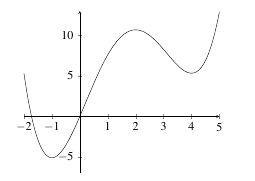
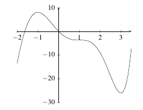
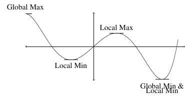
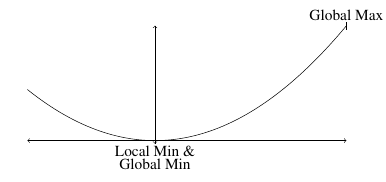
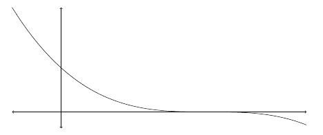
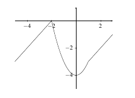
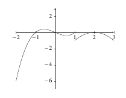

4.1 Maximum and Minimum Values
Critical Points
In this section, we examine the idea of critical points.
Definition: A point \(x = c\) is called a critica point of a function \(f\) if \(f(c)\) exists and either \[f^{\prime}(c) = 0 \hspace{1in} \text{or} \hspace{1in} f^{\prime}(c) \text{does not exist}.\]
The fact that \(f(c)\) exists means that \(x=c\) is in the domain of the function and is therefore an actual point.
Example: Determine the critical points of \(f(x) = \dfrac{3}{20}x^{4/3}(2x^2-5)\).
Solution: We begin by differentiating \(f\) using the product rule. Let \(u = \dfrac{3}{20}x^{4/3}\) and \(v = 2x^2-5\). Then \(u^{\prime} = \dfrac{1}{5}x^{1/3}\) and \(v^{\prime} = 4x\). So, \[\begin{align*} f^{\prime}(x) &= u^{\prime}v + v^{\prime}u\\ &= \dfrac{1}{5}x^{1/3}(2x^2-5) + 4x\left(\dfrac{3}{20}x^{4/3} \right)\\ &= \dfrac{1}{5}x^{1/3}\left(2x^2-5 + 3x^2\right)\\ &= \dfrac{1}{5}x^{1/3}\left(5x^2-5\right)\\ &= x^{1/3}\left(x^2-1\right). \end{align*}\] So, \[f^{\prime}(x) = \sqrt[3]{x}(x^2-1).\] We find that \(f^{\prime}(x) = 0\) when \(x = 0, \pm 1\). All three of those values are in the domain of \(f\), so all three of those values are critical points. We also note that \(f^{\prime}(x)\) exists everywhere, so there are no critical points where \(f^{\prime}(x)\) does not exist.
Example: Determine the critical points of \(f(x) = \dfrac{1}{5} \left(2\ln(x-3) + 3\ln(x+2) \right)\).
Solution: We begin by differentiating \(f\) . \[\begin{align*} f^{\prime}(x) &= \dfrac{1}{5} \left(\dfrac{2}{x-3} + \dfrac{3}{x+2} \right)\\ &= \dfrac{1}{5} \left(\dfrac{2(x+2)}{x-3} + \dfrac{3(x-3)}{x+2} \right)\\ &= \dfrac{2x+4+3x-9}{5(x+2)(x-3)} \\ &= \dfrac{5x-5}{5(x+2)(x-3)} \\ &= \dfrac{x-1}{(x+2)(x-3)}. \end{align*}\] So, \[f^{\prime}(x) = \dfrac{x-1}{(x+2)(x-3)}.\] We find that \(f^{\prime}(x) = 0\) when \(x = 1\) and that \(f^{\prime}(x)\) does not exist when \(x = -2\) and \(x=3\). These are the three possible critical points of \(f\). However, we note that none of these points are in the domain of \(f\) and therefore none are critical points. Therefore, \(f\) has no critical points.
Example: Determine the critical points of \(f(x) = 3x - 2\cos(3x)\).
Solution: We begin by differentiating \(f\). \[f^{\prime}(x) = 3 +6\sin(3x) = 3(1+2\sin(3x)).\] So, \(f^{\prime}(x) = 0\) when \(1 + 2\sin(3x) = 0\) or when \(\sin(3x) = -\dfrac{1}{2}\). Of course, this happens when \(3x = -\pi/6 + 2k\pi\) for \(k \in \mathbb{Z}\). Simplifying, we see that \(x = -\pi/18 + 2/3 k \pi\) for \(k \in \mathbb{Z}\). There are no points where \(f^{\prime}(x)\) is undefined. Since \(f\) is defined for all \(x \in \mathbb{R}\), the set of critical points for \(f\) is \(x = -\pi/18 + 2/3 k \pi\), with \(k \in \mathbb{Z}\).
Practice Problems
- Determine the critical points for each of the following functions.
- \(f\left( x \right) = 2{x^5} + 11{x^4} - 10{x^3} + 23\)
- \(f\left( x \right) = \dfrac{x^2+1}{x^2-x-6}\)
- \(f\left( x \right) = 2xe^{8-x^2}\)
- \(f\left( x \right) = x^3\ln(2x)\)
- \(f\left( x \right) = 4\cos(x) - x\)
- \(f\left( x \right) = \sin^2(x) - \sin^4(x)\)
- Identify the critical points on the graph below.
|  |
|---|
- Identify the critical points on the graph below.
|  |
|---|
Maximum and Minimum Values
Although it is fairly simple to identify maximum and minimum values on a graph, a more rigorous definition is required.
Definition:
- We say that \(f(x)\) has an global (or absolute) maximum at \(x=c\) if \(f(x) \leq f(c)\) for every \(x\) in the domain on which we are working.
- We say that \(f(x)\) has a local (or relative) maximum at \(x=c\) if \(f(x) \leq f(c)\) for every \(x\) in some open interval around \(x= c\).
- We say that \(f(x)\) has an global (or absolute) minimum at \(x=c\) if \(f(x) \geq f(c)\) for every \(x\) in the domain on which we are working.
- We say that \(f(x)\) has a relative (or local) minimum at \(x=c\) if \(f(x) \geq f(c)\) for every \(x\) in some open interval around \(x= c\).
|  |
|---|
Alternatively, we call maximum and minimum points of a function where local extrema refer to local maximum and minimum values and global extrema refer to global maximum and minimum values.
Another important note is that for a point \(x=c\) to be a relative extrema, there must be \(x\)-values to the left and right of \(c\). For example, a relative minimum cannot occur at the endpoint of an interval.
Example: Identify the local and global extrema of $ y = x^2$ on \([-2,3]\).
Solution: We plot \(y = x^2\) and see that \((0,0)\) is the local and global minimum values and \((3,9)\) is the global maximum value. Note that there is no local maximum value.
|  |
|---|
If we change the interval for \(y = x^2\), then the maximum and minimum values may also change. For example, if the interval for \(y = x^2\) is \([-3,3]\), there are two global maximum values - one at -3 and one at 3. If the interval for \(y=x^2\) is \(\mathbb{R}\) or another open interval, there is no maximum value. Of course, if we examined a function like \(y = x\) on \(\mathbb{R}\) or on an open interval, we get no maximum or minimum values. These observations lead us to the following theorem.
Theorem (Extreme Value Theorem): If \(f\) is continuous on the closed interval \([a,b]\), there are two numbers \(c\) and \(d\) with \(a \leq c, d \leq b\) so that \(f(c)\) is an absolute maximum for \(f\) and \(f(d)\) is an absolute minimum for \(f\).
Example: Find the extreme values of \(y = -(x-3)^3\) on \([-1,5]\).
Solution: We sketch the graph of \(y\) and notice that the extreme values are a maximum at \(x=-1\) and a minimum value at \(x = 5\).
|  |
|---|
It is worth noting that if a function is not continuous at a point on \([a,b]\), it does not mean that the function does not have extrema.
There is a link between local extrema and critical points.
Theorem (Fermat’s Theorem): If \(f\) has a local extrema at \(x = c\) and \(f^{\prime}(c)\) exists, then \(x = c\) is a critical point of \(f(x)\).
Example: Use Fermat’s theorem to find the extrema of \(y = x^2 - 4x\).
Solution: We differentiate \(y\) to find \[y^{\prime} = 2x - 4.\] Critical points occur where \(y^{\prime} = 0\) or where \(x = 2\) in this case. Therefore, \(x = 2\) is the only extreme value. Since the \(y\)-value here is -4 and \(y\)-values close to \(x=2\) are larger (ie, at \(x=1\), we have \(y = -2\)), we see that \(x = 2\) is a local minimum.
Practice Problems
- Determine the extreme values for the following graphs on the given interval.
- \(f(x) = 5 - 2x\) on \([-2,2]\)
- \(f(x) = (x-3)^2\) on \([-1,4]\)
- \(f(x) = e^{x-3}\) on \([-3,5]\)
- \(f(x) = \sin(x)\) on \([-\pi,\pi]\)
- Identify the critical points on the graph below.
|  |
|---|
. Identify the critical points on the graph below.
|  |
|---|
Proof of the Extreme Value Theorem
In this section, we prove the Extreme Value Theorem and Fermat’s Theorem. Prior to these proofs, we prove a preliminary result.
Theorem (Boundedness Theorem): If \(f\) is continuous on \([a,b]\), then it is bounded on \([a,b]\).
Proof: Consider the set \(B\) of points \(x in [a,b]\) such that \(f(x)\) is bounded on \([a,x]\). We note that \(a\) is one such point, for \(f(x)\) is bounded on \([a,a]\) by the value \(f(a)\). If \(e>a\) is another point, then all points between \(a\) and \(e\) also belong to \(B\). In other words \(B\) is an interval closed at its left end by \(a\).
Now \(f\) is continuous on the right at \(a\), hence there exists \(\delta >0\) such that \(|f(x)-f(a)|<1\) for all \(x \in [a,a+\delta ]\). Thus \(f\) is bounded by \(f(a)-1\) and \(f(a)+1\) on the interval\([a,a+\delta ]\) so that all these points belong to \(B\).
So far, we know that \(B\) is an interval of non-zero length, closed at its left end by \(a\).
Next,\(B\) is bounded above by \(b\). Hence the set \(B\) has a supremum in \([a,b]\); let us call it \(s\). From the non-zero length of \(B\) we can deduce that \(s>a\).
Suppose \(s<b\). Now \(f\) is continuous at \(s\), hence there exists \(\delta >0\) such that \(|f(x)-f(s)|<1\) for all \(x \in [s-\delta ,s+\delta ]\) so that \(f\) is bounded on this interval. But it follows from the supremacy of \(s\) that there exists a point belonging to \(B\), \(e\) say, which is greater than \(s-\delta /2\). Thus \(f\) is bounded on \([a,e]\) which overlaps \([s-\delta ,s+\delta ]\) so that \(f\) is bounded on \([a,s+\delta ]\). This however contradicts the supremacy of \(s\).
We must therefore have \(s=b\). Now \(f\) is continuous on the left at \(s\), hence there exists \(\delta >0\) such that \(|f(x)-f(s)|<1\) for all \(x \in [s-\delta ,s]\) so that \(f\) is bounded on this interval. But it follows from the supremacy of \(s\) that that there exists a point belonging to \(B\), $ e$ say, which is greater than \(s-\delta /2\). Thus \(f\) is bounded on \([a,e]\) which overlaps \([s-\delta ,s]\) so that \(f\) is bounded on \([a,s]\).
Theorem (Extreme Value Theorem): If \(f\) is continuous on the closed interval \([a,b]\), there are two numbers \(c\) and \(d\) with \(a \leq c, d \leq b\) so that \(f(c)\) is an absolute maximum for \(f\) and \(f(d)\) is an absolute minimum for \(f\).
Proof: The set \(\{y \in R : y = f(x) \text{ for some } x \in [a,b]\}\) is a bounded set. Hence, its least upper bound exists by least upper bound property of the real numbers. Let \(M = \sup(f(x))\) on \([a, b]\). If there is no point \(x\) on \([a, b]\) so that \(f(x) = M\) then \(f(x) < M\) on \([a, b]\). Therefore, \(1/(M - f(x))\) is continuous on \([a, b]\).
However, to every positive number \(\varepsilon\), there is always some \(x \in [a, b]\) such that \(M - f(x) < \varepsilon\) because \(M\) is the least upper bound. Hence, \(1/(M - f(x)) > 1/\varepsilon\), which means that \(1/(M - f(x))\) is not bounded. Since every continuous function on a \([a, b]\) is bounded, this contradicts the conclusion that \(1/(M - f(x))\) was continuous on \([a, b]\). Therefore, there must be a point \(x \in [a, b]\) such that \(f(x) = M\).
Theorem (Fermat’s Theorem): If \(f\) has a local extrema at \(x = c\) and \(f^{\prime}(c)\) exists, then \(x = c\) is a critical point of \(f(x)\).
Proof: Without loss of generality, assume that \(f(x)\) has a relative maximum at \(x = c\). We know that \(f(c) \geq f(x)\) for all \(x\) sufficiently close to \(x = c\). In particular for all \(h\) that are sufficiently close to zero (positive or negative) we must have, \[f(c) \geq f(c+h),\] or \[f(c+h) - f(c) \leq 0.\]
Now, at this point, assume \(h>0\). Then \[\dfrac{f(c+h)-f(c)}{h} \leq 0.\] Since \(h > 0\), we can take the right-hand limit of both sides and find \[\lim_{h \rightarrow 0^+} \dfrac{f(c+h)-f(c)}{h} \leq \lim_{h\rightarrow 0^+} 0 = 0.\] Since \(f^{\prime}(c)\) exists, it must be true that \(f^{\prime}(c) \leq 0\).
If \(h < 0\), \[\dfrac{f(c+h)-f(c)}{h} \geq 0.\] For the same reason as earlier, we find that \[f^{\prime}(c) = \lim_{h \rightarrow 0} \dfrac{f(c+h)-f(c)}{h}= \lim_{h \rightarrow 0^-} \dfrac{f(c+h)-f(c)}{h} \geq \lim_{h \rightarrow 0^-} 0 = 0.\] Since \(f^{\prime}(c) \geq 0\) and \(f^{\prime}(c) \leq 0\), it must be true that \(f^{\prime}(c) = 0\) and so \(c\) is a critical point.
The proof for a relative minimum is similar.
Practice Problems
Sketch the graph of some function on the interval \([1,6]\) that has an absolute maximum at \(x=6\) and an absolute minimum at \(x=3\).
Sketch the graph of some function on the interval \([-4,3]\) that has an absolute maximum at \(x=-3\) and an absolute minimum at \(x=2\).
Sketch the graph of some function that meets the following conditions:
- The function is continuous.
- Has two relative minimums.
- One of relative minimums is also an absolute minimum and the other relative minimum is not an absolute minimum.
- Has one relative maximum.
- Has no absolute maximum.
- Sketch the graph of some function that meets the following conditions:
- Graphed on the interval \([4,10]\).
- Has no relative extrema.
- Has an absolute maximum at one end point.
- Has an absolute minimum at the other end point.
- Sketch the graph of some function that meets the following conditions:
- Has a discontinuity at some point.
- Has an absolute maximum and an absolute minimum.
- Neither absolute extrema occurs at the discontinuity.
Sketch the graph of a function on the interval \((-\infty,\infty)\) that has a relative minimum at \(x=4\) and a relative maximum at \(x = -2\) and no absolute extrema.
Sketch the graph of some function that meets the following conditions:
- Has at least one absolute maximum.
- Has one relative minimum.
- Has no absolute minimum.
Finding Absolute Extrema
Given a continuous function \(f\) on a closed interval \([a,b]\), the extreme value theorem guarantees both a global maximum and global minimum value for \(f\). The process for finding these extrema is quite simple:
- Verify the conditions of the extreme value theorem are met - ie, is \(f\) continuous on a closed interval \([a,b]\).
- Find all critical points of \(f\) on \([a,b]\) - Fermat’s Theorem guarantees that these will be the local extrema.
- Evaluate \(f\) at each critical point and at both \(a\) and \(b\).
- Determine the global extrema.
Example: Find the global maximum and minimum for \(f(x) = \dfrac{x}{x^2+1}\) on \([0,5]\).
Example: First, we note that \(f\) is a rational function and is therefore continuous on its domain (in this case \(\mathbb{R}\)). The derivative of \(f\) is \[f^{\prime}(x) =\dfrac{x^2+1 - 2x^2}{(x^2+1)^2} = \dfrac{1- x^2}{(x^2+1)^2}.\] Of course, \(f^{\prime}(x) = 0\) at \(x = \pm 1\). The only critical point of \(f\) on \([0,5]\) is \(x=1\). We now evaluate \(f\) at the critical point (\(x=1\)) and the two end points of the interval (\(x = 0,5\)). Since \[f(0) = 0, \hspace{0.5in} f(1) = 1/2, \hspace{0.5in} f(5) = 5/26,\] the global maximum is at \(x=1\) and the global minimum is at \(x=0\).
Example: Find the global maximum and minimum for \(f(x) = x\sqrt{9-x^2}\) on \([-1,3]\).
Example: First, we note that \(f\) is continuous on \((-\infty,3]\). The derivative of \(f\) is \[f^{\prime}(x) =\sqrt{9-x^2} + \dfrac{-2x^2}{2\sqrt{9-x^2}} = \dfrac{-2x^2+9}{\sqrt{9-x^2}}.\] Of course, \(f^{\prime}(x) = 0\) at \(x = \pm 3\sqrt{2}/2\). The only critical point of \(f\) on \([-1,3]\) is \(x=3\sqrt{2}/2\). We now evaluate \(f\) at the critical point (\(x=3\sqrt{2}/2\)) and the two end points of the interval (\(x = -1,3\)). Since \[f(-1) = -2\sqrt{2}, \hspace{0.5in} f(3\sqrt{2}/2) = 9/2, \hspace{0.5in} f(3) = 0,\] the global maximum is at \(x=3\sqrt{2}/2\) and the global minimum is at \(x=-1\).
Practice Problems
- Determine the extreme values for the following graphs on the given interval.
- \(f(x) = x^4 - 2x^2 + 4\) on \([-2,3]\)
- \(f(x) = x-2\cos(x)\) on \([-\pi,\pi]\)
- \(f(x) = x\sqrt{4-x^2}\) on \([-1,2]\)
- \(f(x) = \dfrac{3-4x}{x^2+1}\) on \([-2,4]\)
- \(f(x) = 8 + 3x + 7{x^2} - {x^3}\) on \([-1,5]\)
- \(f(x) = 3\cos \left( {2x} \right) - 5x\) on \([0,6]\)
- \(f(x) = 7\cos \left( x \right) + 2x\) on \([-5,4]\)
- \(f(x) = e^{5 + 9x} + e^{1 - 3x} + 6\) on \([-1,0]\)